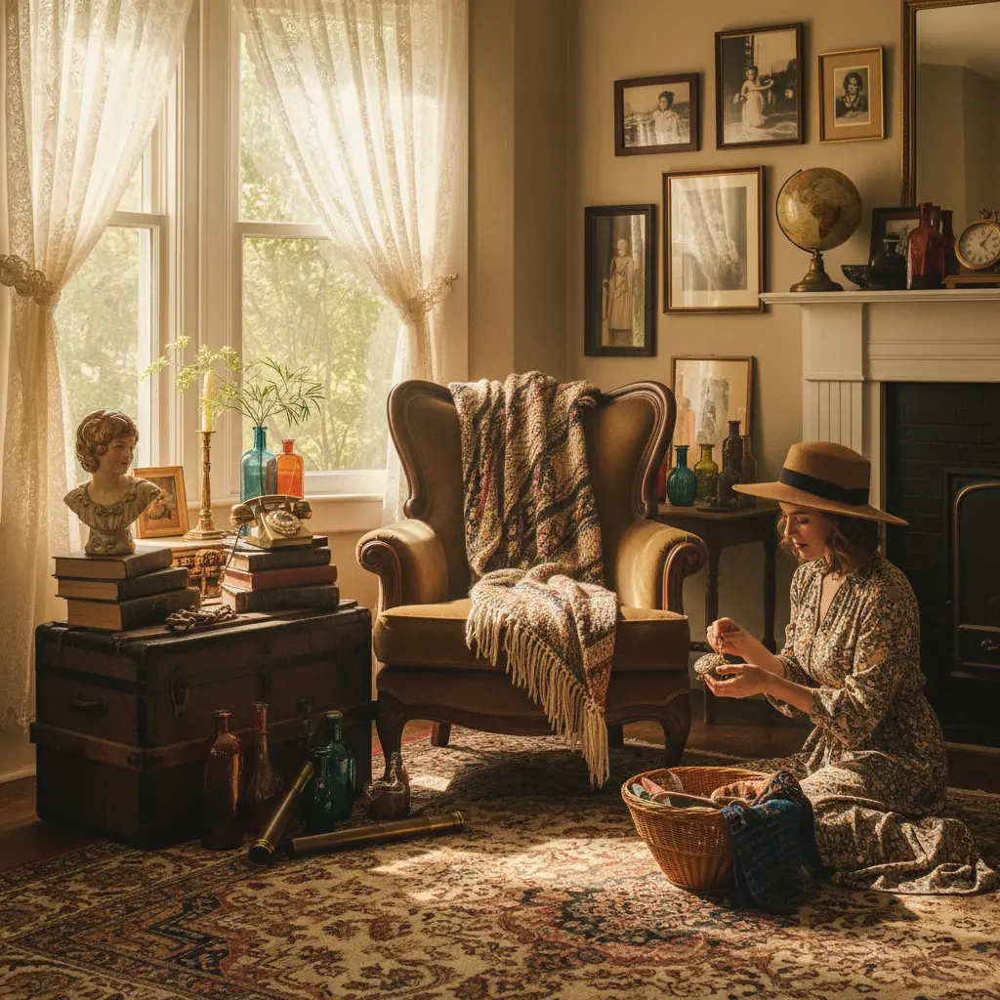

By Emma Richards | December 8, 2025 | HOMES

"Resourcefulness is the new luxury" isn't just a SILK slogan—it's a practice. This month's thrift find proves why.
I found the table at Goodwill for $35. Scratched laminate top, wobbly chrome legs, and a layer of grime that suggested decades in a basement. Most people walked past it. I saw possibility.
What caught my eye was the construction. Solid wood core under the damaged laminate. Real chrome, not painted metal. Extending leaf mechanism still intact. This was a 1940s Hoosier-style dinette table—the kind families gathered around for Sunday dinners, where homework got done and holiday pies cooled.
I brought it home to the Parkersburg house. Jake (who knows old houses and old furniture) confirmed my hunch: "That's a good one. Worth saving."
The process took three weekends:
Total cost: $35 for the table, $40 for sandpaper and finish, and about 15 hours of work. Comparable new tables (far lower quality) start at $500. Similar vintage tables in good condition sell for $800-1200 in antique shops.
But the economics aren't really the point. The point is taking something discarded and making it beautiful again. The point is learning skills that previous generations considered basic. The point is owning something with history and character instead of particle board designed for planned obsolescence.
At SILK Homes, "resourcefulness is the new luxury" means rejecting the idea that new is always better. It means valuing durability, repairability, and story over convenience and status.
The table now sits in our shared kitchen. Six of us can gather around it comfortably. It's held game nights, community dinners, late-night conversations, and countless morning coffees. It's become a gathering place, which is exactly what it was designed for 80 years ago.
When you restore something instead of buying new, you're participating in a different economy—one based on care rather than consumption, on skill rather than spending, on making do and making better. You're also learning. I now know how to identify quality furniture, strip finishes, sand wood properly, and rehabilitate chrome. These aren't just DIY skills—they're a form of literacy about the material world.
And there's satisfaction in using something you rescued and renewed. Every meal at that table reminds me: beautiful, functional things don't have to be expensive or new. They just have to be tended.
Next month: A 1950s sewing cabinet transformed into a bathroom vanity. Because resourcefulness never goes out of style.
© 2025 SILK Life Magazine | Home